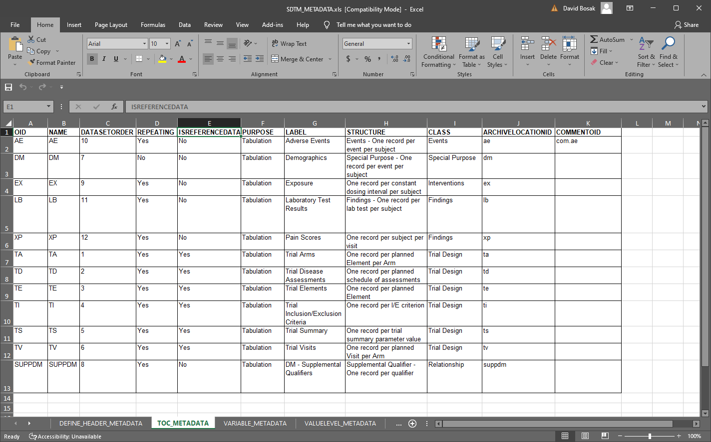
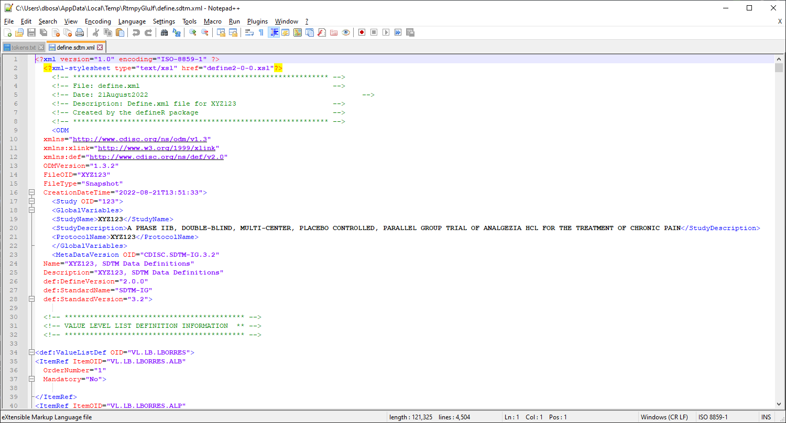
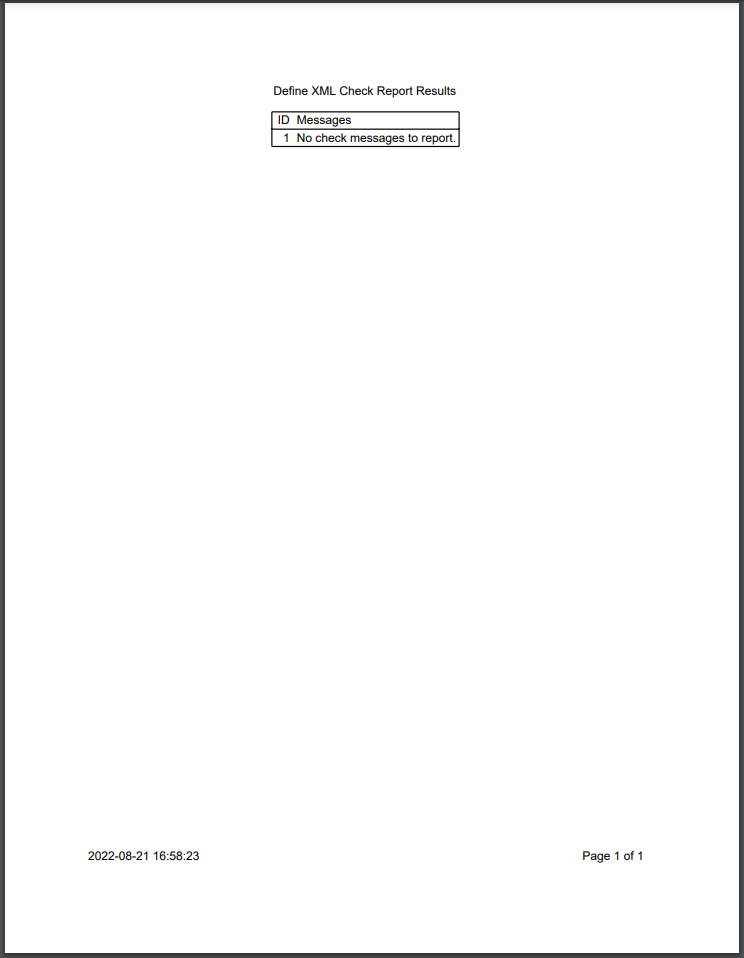
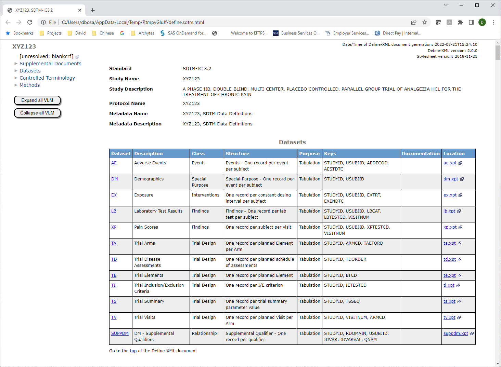
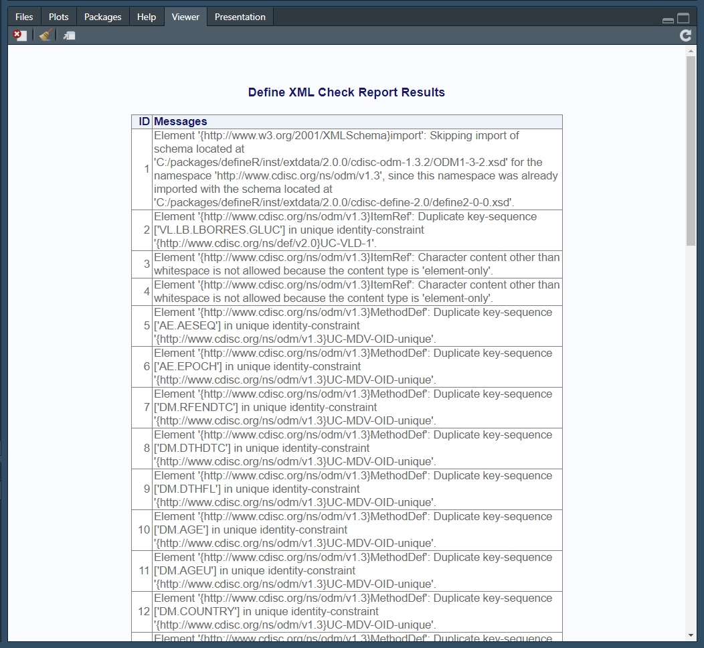
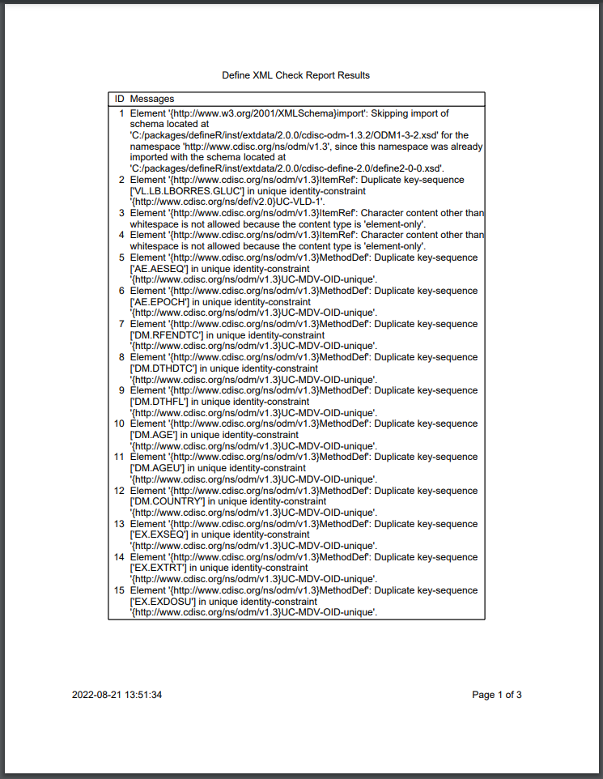

The defineR package creates the “define.xml” documents needed for regulatory submission to the FDA and other regulatory bodies. The XML structure for the documents was defined by the CDISC standards organization, in collaboration with industry representatives. The documents are required for FDA submission, and are frequently characterized as the “most important” documents. These documents are used by FDA reviewers to understand the data being submitted.
The defineR package contains only two functions:
write_define(): Creates the
define XML from spreadsheet metadata.write_metadata(): Generates a
metadata spreadsheet template.
Below is a brief demonstration of the above two functions. See the function documentation for additional details.
The defineR package uses spreadsheet metadata to create the define.xml document. The functions in defineR both read and write this spreadsheet. The package handles both SDTM and ADaM data standards.
You can generate a sample metadata spreadsheet using the following code:
# Get temporary directory
tmp <- tempdir()
# Create demo spreadsheet
pth <- write_metadata(tmp, demo = TRUE)
# View file
# file.show(pth)The above code will produce sample metadata for SDTM that looks like this:

Using the metadata from above, we can now create the define.xml and associated files. More than one file can be generated by this function, depending on the parameters selected. By default, the function will create the define.xml, a PDF check report, and the define.html.
# Generate define files
res <- write_define(pth, tmp, view = FALSE)
# View check results
res
# NULL
# View XML
# file.show(file.path(tmp, "define.sdtm.xml"))
# View check report
# file.show(file.path(tmp, "check.sdtm.pdf"))
# View HTML
# file.show(file.path(tmp, "define.sdtm.html"))The output directory will now contain the define.xml. Here is the top portion of the document: 
Here is the check report: 
The HTML transformation was also generated and placed in the output directory. Here is a portion of the HTML: 
The transformation uses the latest available XSLT transformation from CDISC. The latest XSLT includes code to insert line feeds in the method/comment column. These line feeds make the HTML more readable than in the past.
Reviewing the HTML can give you valuable feedback on the accuracy and completeness of your metadata. But even more feedback can be obtained from the check report.
The SDTM demo metadata produces no completeness check messages. When there are messages, they will be communicated in three ways:
Here is what the viewer looks like when there are completeness messages: 
The same check report is also output to the target directory as a PDF: 
These check results can help you identify problems with your metadata. You can use this function to iteratively check and correct your metadata until no issues are found.